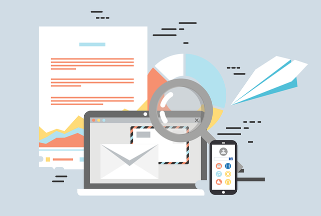

E-mail Marketing: 5 Táticas para Aumentar suas Taxas de Conversão
O e-mail marketing continua sendo uma das ferramentas mais poderosas para alcançar seu público-alvo de forma direta. No entanto, para obter sucesso, é fundamental aplicar as melhores práticas para aumentar a taxa de conversão de suas campanhas. Neste artigo, vamos compartilhar cinco estratégias eficazes que podem transformar seus resultados e impulsionar o retorno do seu investimento.
1. Segmente sua lista de e-mails
Enviar o e-mail certo para as pessoas certas no momento certo é a chave para o sucesso. A segmentação da sua lista de e-mails permite que você personalize suas mensagens e envie conteúdo altamente relevante para grupos específicos de assinantes. Por exemplo, você pode segmentar seus contatos com base em:
- Compras anteriores ou interesse em produtos
- Localização geográfica
- Idade ou gênero
- Estágio no funil de vendas
Assinantes que recebem conteúdo personalizado têm uma chance muito maior de se engajarem e converterem. Ferramentas como o HubSpot ou Mailchimp oferecem segmentação avançada e automação de e-mails para facilitar esse processo.
2. Crie assuntos persuasivos
O assunto do e-mail é a primeira coisa que seus assinantes veem, e é o que determinará se eles abrirão o e-mail ou não. Use as seguintes dicas para criar linhas de assunto irresistíveis:
- Seja claro e direto, deixando evidente o valor do e-mail.
- Use personalização para incluir o nome do assinante ou referências específicas (ex.: "João, temos uma oferta exclusiva para você!").
- Crie um senso de urgência com termos como "Apenas hoje" ou "Última chance".
- Faça perguntas intrigantes ou adicione números para gerar curiosidade (ex.: "Você está pronto para aumentar suas vendas em 20%?").
Ferramentas como o CoSchedule Headline Analyzer podem ajudar a testar e melhorar suas linhas de assunto.
3. Otimize para dispositivos móveis
Hoje em dia, mais de 50% dos e-mails são abertos em dispositivos móveis. Por isso, garantir que seus e-mails sejam completamente responsivos é crucial para manter os leitores engajados. Aqui estão algumas dicas para otimizar seu e-mail para dispositivos móveis:
- Use um layout de coluna única para que o conteúdo não fique apertado em telas pequenas.
- Certifique-se de que os botões e links sejam grandes o suficiente para que os usuários possam clicar facilmente.
- Escolha fontes de fácil leitura, com tamanho mínimo de 14px.
- Otimize imagens para carregamento rápido em conexões móveis, usando formatos compactados como JPEG ou PNG.
4. Use CTAs claros e persuasivos
Os Call-to-Actions (CTAs) são elementos fundamentais para converter seus assinantes em clientes. Eles devem ser claros, visíveis e persuasivos. Veja algumas dicas para criar CTAs que incentivam o clique:
- Use verbos de ação como "Compre agora", "Assine hoje" ou "Veja a oferta".
- Crie um senso de urgência, destacando prazos ou promoções limitadas (ex.: "Últimas unidades!").
- Coloque os CTAs em locais visíveis, tanto no início quanto no final do e-mail.
- Use cores contrastantes para fazer o botão se destacar do restante do conteúdo.
5. Teste e otimize constantemente
O que funciona para uma campanha pode não funcionar para outra. Por isso, é essencial realizar testes A/B regularmente para descobrir o que gera melhores resultados. Aqui estão alguns elementos que você pode testar e otimizar:
- Linhas de assunto
- Design e layout do e-mail
- Horário de envio
- Conteúdo e ofertas
Ao analisar os resultados e ajustar sua estratégia com base em dados, você pode melhorar continuamente suas campanhas. Ferramentas como Google Analytics, Mailchimp e Campaign Monitor permitem rastrear o desempenho de suas campanhas de e-mail marketing.

Solicite seu Projeto de E-mail Marketing
Quer aumentar a taxa de conversão das suas campanhas de e-mail marketing? Nossa equipe oferece soluções personalizadas para otimizar sua estratégia e melhorar seus resultados. Entre em contato conosco para uma consulta gratuita!
Pronto para transformar seu e-mail marketing?
Deixe-nos ajudá-lo a construir campanhas de e-mail que geram resultados. Solicite seu projeto de e-mail marketing agora mesmo!
Solicitar Projeto